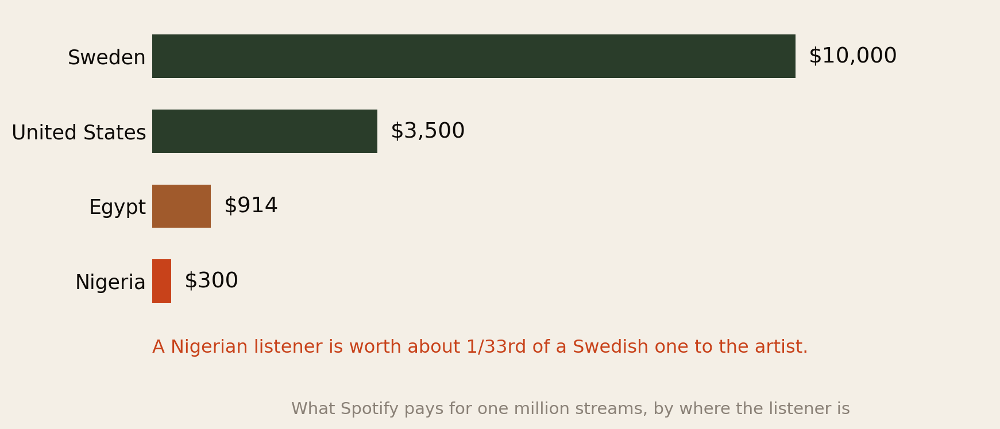
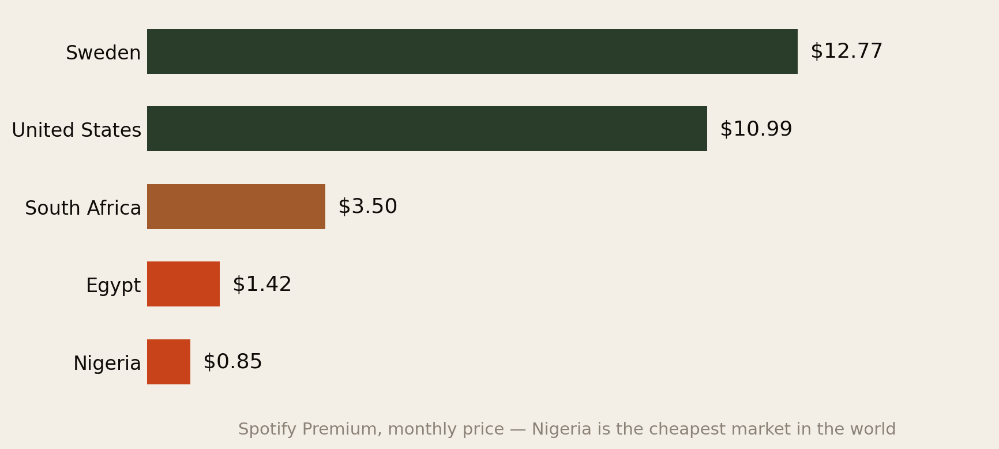
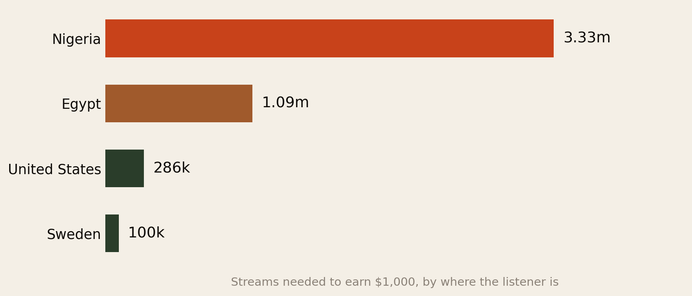
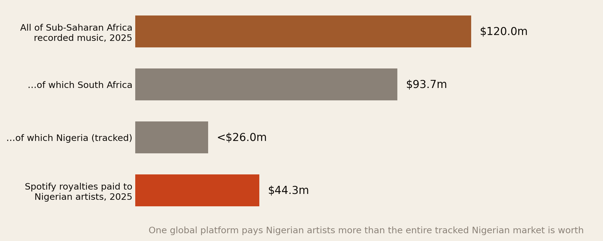
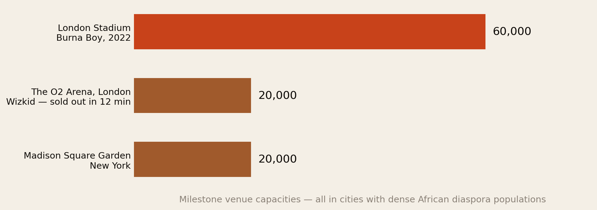
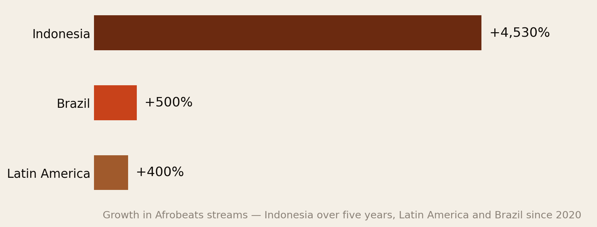

The Music Is African. The Money Is Abroad.
Spotify pays $300 for a million streams in Nigeria and $10,000 for a million in Sweden. Which means the diaspora is not Afrobeats’ audience. It is Afrobeats’ business model — and almost nobody says so out loud.
Section 01The Short Version
Afrobeats and amapiano are the biggest cultural export Africa has produced in a generation. The music is made in Lagos, Accra and Johannesburg. The revenue is overwhelmingly generated somewhere else — and mostly by Africans and their descendants living abroad, plus the non-African audiences the diaspora introduced the music to.
- A stream is not a stream. Spotify pays roughly $300 per million streams in Nigeria and $10,000 per million in Sweden — a 33-fold gap. The US sits around $3,500 (Chartlex; Beats & Business).
- The reason is the subscription price, not prejudice. Spotify Premium costs about $0.85 a month in Nigeria — the cheapest in the world — against $12.77 in Sweden. Smaller pot, thinner slices.
- Nigerian artists earned more from one platform than their entire domestic market is worth. Spotify paid over ₦60 billion (~$44.3m) to Nigerian artists in 2025. All of Sub-Saharan Africa’s tracked recorded-music revenue that year was $120m, of which Nigeria was under $26m.
- 30.3 billion streams of Nigerian music on Spotify in 2025, 1.6 billion listening hours, and 1.3 billion first-time discoveries, up 26% year on year.
- 58% of those royalties went to independent artists and labels — a genuinely unusual figure for any music market.
- And the live economy is almost entirely a diaspora economy. Burna Boy became the first African artist to sell out a UK stadium — 60,000 at London Stadium. Wizkid sold out the 20,000-capacity O2 in twelve minutes and headlined Madison Square Garden. Those are diaspora cities.
Every African artist who “made it” made it on foreign money. That is not a criticism of the artists. It is a description of where the industry’s cash actually sits — and a problem the continent has not solved.
Section 02Not All Streams Are Equal
This is the number that reframes everything anyone tells you about African music success.

An artist in Lagos with a million plays from Nigerian listeners has earned roughly $300. The same million plays from Swedish listeners is roughly $10,000. Per-stream, that is about $0.0005 in low-income markets against $0.008 in Norway and Sweden.
Here is the arithmetic that makes the whole report click. Spotify paid Nigerian artists about $44.3 million across 30.3 billion streams in 2025. Divide: an average of roughly $1.46 per thousand streams — nearly five times the local Nigerian rate of about $0.30 per thousand.
If Nigerian artists were mostly being played by Nigerians, that average would sit near the Nigerian rate. It sits five times above it. The listeners paying the bills are overseas.
Section 03Why — The $0.85 Subscription
It would be easy to read Fig 1 as discrimination. It is not. It is arithmetic, and understanding the mechanism matters because it tells you what can and cannot be fixed.

Streaming royalties are paid from a pool. Each country’s pool is essentially what subscribers in that country paid in, minus the platform’s cut, divided among the artists they listened to. A Nigerian subscriber contributes about $0.85 a month. A Swedish subscriber contributes $12.77. Fifteen times the money into the pot produces roughly fifteen to thirty times the money out.
Two things compound it:
- Free-tier dominance. In comparable markets more than 80% of users are on the ad-supported free tier, and ad revenue per listener in Nigeria is a fraction of the subscription equivalent. Nigeria follows the same pattern.
- ARPU. Average revenue per user sits below about $1.40 a month in many developing markets, against several times that in North America and Western Europe.
The practical consequence for an artist is uncomfortable but clear: growing your Nigerian audience grows your fame. Growing your diaspora and Western audience grows your income. They are not the same project, and conflating them has cost a lot of artists a lot of money.
Section 04What $1,000 Takes

3.33 million Nigerian streams, or 100,000 Swedish ones. Same thousand dollars.
Put that beside the streaming economics in our creator income report and the same law appears in a second industry: where your audience sits determines your income far more than how big it is. For a video creator the spread was about 1,000-fold across platforms. For a musician it is 33-fold across borders — on the same platform, for the same song, on the same day.
And note what these numbers are before: this is gross. A signed artist may see anywhere from a small fraction to about half after the label, distributor, publisher and manager have taken their positions. The 3.33 million figure is the optimistic version.
Section 05The Market That Isn’t There
Now the structural fact underneath all of it.

Sub-Saharan Africa’s tracked recorded-music revenue grew 15.2% in 2025 to $120 million. South Africa took 78% of it ($93.7m), on the strength of a mature collections infrastructure and higher subscription prices. Nigeria — 220 million people and the most culturally dominant music scene on the continent — accounts for under $26 million of tracked revenue.
And Spotify alone paid Nigerian artists about $44.3 million.
These two figures measure different things — one is revenue collected inside a territory, the other is money paid to artists of a nationality from listeners everywhere. But holding them side by side is exactly the point: the money attached to Nigerian music is not in Nigeria. It is generated abroad, paid in hard currency, and lands in the accounts of whoever controls the rights.
Nigeria has the audience, the talent and the culture. South Africa has the collection society. Guess which one has 78% of the continent’s recorded-music revenue.
That is a fixable problem, and it is worth naming plainly: the gap is infrastructure — royalty collection, rights registration, publishing administration and enforcement. Music that is not registered properly does not get paid, no matter how many times it is played.
Section 06The Live Economy
Streaming gets the headlines. Live performance is where the diaspora actually hands over money, and it does so at Western ticket prices.

Burna Boy became the first African artist to sell out a UK stadium, playing to 60,000 at London Stadium on the Love, Damini tour. Wizkid sold out the 20,000-capacity O2 Arena in twelve minutes, then added nights that also sold out in under ten — and became the first Nigerian artist to headline Madison Square Garden.
Look at the map rather than the milestones. London, New York, Toronto, Houston, Atlanta, Paris, Amsterdam. The tour routing of a successful African artist is, almost exactly, a map of the African diaspora. Afro Nation — whose 2026 Portugal edition is headlined by Burna Boy, Asake, Wizkid and Tyla — is a festival built in Europe for an audience that is substantially diaspora and diaspora-adjacent.
Why live matters disproportionately here:
- Ticket prices track the local economy, not the artist’s. A London ticket is priced in pounds against London wages.
- The artist keeps a much larger share of live revenue than of recorded revenue, where labels and distributors sit in the middle.
- It is not subject to the pool problem. Nobody divides your gate receipts by a national ARPU.
- Merchandise attaches to it, at full Western retail.
Which is why the sequence for a serious African artist is now well established: build the streaming numbers to prove demand, then monetise that demand on a stage in a diaspora city.
Section 07Who Actually Gets Paid
One genuinely encouraging finding: 58% of the royalties Nigerian artists earned on Spotify in 2025 went to independent artists or labels, not the majors.
That is a high independent share by global standards, and it reflects something real about how Afrobeats grew — through distribution deals, self-releases and regional labels rather than a traditional major-label pipeline. An artist who owns their masters and registers their publishing keeps a genuinely different fraction of that $44.3 million than one who signed a 360 deal at nineteen.
But the chain still has several hands in it, and each takes a cut before the artist sees anything:
- The platform keeps its share before the pool is divided.
- The distributor or label takes a percentage — small for a pure distribution deal, very large for a traditional record deal.
- Publishing is a separate revenue stream from the recording, and is the one most commonly left uncollected by African artists. Unregistered publishing is money sitting in a pot with your name not on it.
- Management, booking agents and producers take their positions on top.
The single most valuable administrative act available to an African artist is the same one available to an African professional abroad in our succeeding-abroad report: register the paperwork properly, early, before the money starts arriving. It is boring, it is cheap, and it is worth more than any amount of promotion.
Section 08Where the Growth Goes Next

The diaspora opened the door. The next wave is walking through it without any diaspora connection at all: Latin America up more than 400% since 2020, Brazil up 500%, Indonesia up 4,530% over five years. France, the Netherlands and Mexico are all growing quickly.
This matters commercially in a specific way. Some of these are high-ARPU markets and some are not. Growth in France and the Netherlands converts to real money; growth in Indonesia produces enormous stream counts and modest royalties, for exactly the reasons in Section 03. A rational artist reads growth charts and revenue charts as two different documents.
The diaspora’s role also changes at this point. For fifteen years it was the audience. It is now increasingly the bridge — the reason a Brazilian or Indonesian listener encountered the music at all. That is a less visible contribution and a more valuable one.
Section 09If You Are an Artist
- Know which country your streams come from, monthly. Spotify for Artists shows you. A track doing 2 million plays in Nigeria and 200,000 in the US is earning most of its money from the smaller number. Most artists have never looked.
- Register your publishing before you need to. The recording and the composition are two different assets paid through two different systems. The second one is where African artists most often lose money quietly and permanently.
- Treat the diaspora city as the revenue event. Streaming proves demand; a show in London, Houston or Toronto converts it. Route tours by diaspora density, not by fantasy.
- Take distribution over a traditional deal if you can survive the wait. The 58% independent share is not an accident — it is the whole reason Afrobeats built more artist-side wealth than earlier African music waves.
- Do not read stream counts as income. Indonesia at +4,530% is a wonderful cultural fact and a modest financial one.
- Price the home market as marketing, not revenue. A Lagos show and a Lagos stream build the thing that gets paid for elsewhere. That is a legitimate strategy — just do not mistake it for the income.
Section 10If You Are a Fan Abroad
The diaspora already funds this industry. It could do so more deliberately, and the mechanics are worth knowing because they are not intuitive.
- Your paid subscription is worth roughly fifteen Nigerian ones to the artists you listen to. If you are streaming African music on a free tier in a high-ARPU country, upgrading is one of the highest-leverage things you can do for the artists you love.
- Buying a ticket beats streaming an album a thousand times. A single £60 ticket delivers more to the artist than hundreds of thousands of streams from a low-ARPU market.
- Merchandise and direct-to-fan beat both. No pool, no split, no territory rate.
- Streaming in your own country, on your own account, matters. It is your national pool the money comes from.
- If you invest, the infrastructure is the opportunity, not the artists. The gap in Fig 4 is a collections and rights-administration gap. That is a business, and it is under-built across most of the continent.
Section 11The Uncomfortable Part
Three things worth saying plainly, because the celebration around Afrobeats tends to skip them.
First, the dependency is real. An industry whose revenue is overwhelmingly foreign is exposed to foreign taste. Afrobeats is currently fashionable in the West. Genres stop being fashionable. A domestic market that cannot pay its own artists is a fragile foundation, however loud the moment.
Second, the value is captured off the continent. The platforms are American and Swedish, the major labels are American, Japanese and French, the biggest venues and festivals are European and American, and the management and booking infrastructure has largely followed the money abroad. African music is a growth industry whose profit centres are mostly not African.
Third, and most importantly: none of this is the artists’ fault, and the fix is not artistic. No amount of “support local” solves a $0.85 subscription price against a $12.77 one. The binding constraints are purchasing power, payment infrastructure, premium conversion and rights collection. Those are policy and business problems.
South Africa is 78% of the continent’s tracked recorded-music revenue not because it makes 78% of the music, but because it built the machinery that counts and collects. That is the whole lesson.
Section 12Method & Limits
What this report is: an assembly of published streaming, royalty and market figures as at 12 August 2026, read for what they say about where African musicians’ income originates.
- Update, 15 August 2026 — the Nigerian rate. A per-country table we used in a later report implies roughly $1,100 per million streams for Nigeria, against the ~$300 used here. Both are estimates of a number Spotify does not publish, and we cannot resolve which is closer. Read the Nigerian rate as a $300–$1,100 per million band: the direction and rough magnitude of the gap to Western markets is robust across every source we found, but the precise multiple — whether 33× or nearer 4× — is not.
- Per-country payout rates are estimates, not published figures. Spotify does not disclose per-country per-stream rates; the numbers in Fig 1 and Fig 3 come from industry analysis and creator-reported data. Treat them as bands, not precise prices, and expect them to move with exchange rates and subscription changes.
- Fig 4 compares two different measures. Tracked recorded-music revenue is collected within a territory; the Spotify payout is money paid to artists of a nationality from listeners worldwide. They cannot be summed or subtracted. We place them together deliberately, and the comparison is directional.
- Widely-circulated claims that Nigeria’s music industry is worth $2 billion or that its recorded-music market was $1.8 billion in 2023 cannot be reconciled with IFPI-style tracked revenue of under $26 million. Those larger figures appear to capture something else entirely — informal economy, live, broadcast and adjacent sectors, or simply an error propagating between sources. We have used the tracked figures and flagged the conflict rather than pick the flattering number.
- The $1.46 per thousand streams average is our own arithmetic from two published figures (₦60bn+ royalties over 30.3bn streams), converted at approximately ₦1,355 to the dollar. Naira conversions move materially with the exchange rate.
- Nothing here measures live revenue directly. Venue capacities are documented; gate receipts, guarantees and artist splits are not public. The live section is qualitative about magnitudes.
- “African music” here leans heavily Nigerian, because Nigeria publishes the most usable data. Amapiano, Francophone African music, North African and East African scenes have different economics that this report does not separate out.
- Royalty figures are gross to rights-holders, not net to artists. What an individual musician receives depends entirely on their contracts.
Principal sources: Spotify Loud & Clear reporting via Arise and Africa.com; Chartlex and Beats & Business on per-country royalty rates; TechCabal on Nigeria’s streaming economy and ARPU; Pulse on subscription pricing; The Freeme Space on Sub-Saharan tracked revenue and the Nigeria collections gap; AllAfrica on stadium and arena milestones; Punch on Afro Nation 2026.
Companion reports: Your Address Pays Better Than Your Following and How Long Until It Was Worth It?
The diaspora helps the diaspora.
Africa Global Forum is a peer network for Africans abroad — help each other, sit together, and bounce ideas. The research above is part of an open library. The Forum itself is by application.